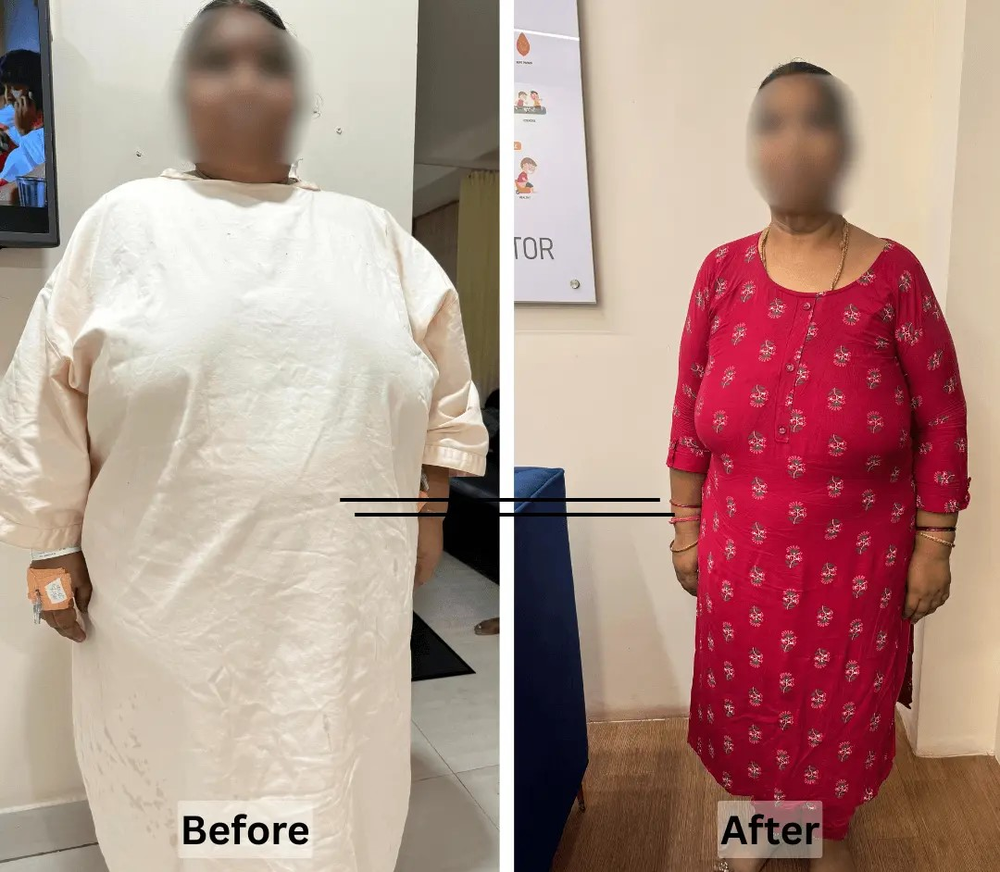

Sleeve Gastrectomy
The most commonly performed weight-loss procedure, reducing stomach size to lower capacity and intake.
Book for this →Personalised bariatric care. Evidence-based surgical options. Support beyond the operation.
When obesity continues to affect your health, mobility, confidence or everyday life despite sustained efforts to lose weight, surgery may be one treatment option to consider.
Weight loss surgery, also known as bariatric or metabolic surgery, can change how much you can eat and how your body processes food. The right procedure depends on your health, weight history, medical conditions and individual goals.
Tap an option to open a fresh consultation form and get to the right conversation faster.
The most commonly performed weight-loss procedure, reducing stomach size to lower capacity and intake.
Book for this →Reroutes digestion for further weight loss, often considered for diabetes or severe reflux.
Book for this →A shorter, effective alternative bypass technique with strong long-term results.
Book for this →Reviewing or adjusting a previous weight-loss surgery that has stopped giving the expected results.
Book for this →Metabolic surgery that can meaningfully improve or help manage Type 2 diabetes.
Book for this →Weight-related high blood pressure and joint strain that a medical assessment can address.
Book for this →Disrupted sleep, breathlessness or hormonal symptoms linked to excess weight.
Book for this →Diet, supplements and follow-up planning after weight-loss surgery.
Book for this →Obesity can affect much more than appearance. It can influence mobility, sleep, blood sugar, blood pressure and everyday quality of life.
Tick the experiences that sound familiar. This is not a diagnosis or an eligibility test — it is simply a starting point for deciding whether a medical assessment may be useful.
Select what sounds familiar.
Discuss my optionsSelf-check only — not a medical diagnosis or surgical eligibility assessment. Obesity is associated with conditions including type 2 diabetes, high blood pressure, sleep apnoea and joint problems, among others.
Obesity is a medical condition — not a failure of willpower.
Many people who consider weight loss surgery have already tried different approaches to losing weight, including changes to diet, exercise and medication.
The challenge isn't always knowing what to do. It can be maintaining meaningful weight loss over time while also managing the health problems associated with obesity.
For appropriately selected patients, bariatric surgery can become part of a comprehensive treatment plan — alongside nutrition, physical activity, behavioural support and long-term medical follow-up.
Understanding the procedure is just as important as understanding the possible benefits.
In your consultation, you'll learn which surgical options may be appropriate for you, what the procedure involves, what changes to expect afterwards and why long-term follow-up matters.
Book my consultationThree simple views of the decision, the procedure and the journey after surgery.
Obesity is influenced by multiple biological, behavioural and environmental factors. For some people, sustained weight loss through lifestyle measures alone can be difficult.
Gastric sleeve reduces the size of the stomach. Gastric bypass creates a smaller stomach pouch and changes the route food takes through the digestive system.
Nutrition, physical activity, prescribed supplements and regular follow-up are important parts of long-term bariatric care. Bariatric surgery generally requires ongoing dietary changes, supplementation and follow-up.
The right procedure depends on your medical history, BMI, obesity-related health conditions, previous treatments and other individual factors. Two commonly performed procedures are gastric sleeve surgery and gastric bypass surgery.
Sleeve gastrectomy removes a large portion of the stomach, leaving a smaller, sleeve-shaped stomach.
The smaller stomach can help you feel full after eating less food. The procedure also affects signals involved in appetite and metabolism.
NIDDK describes sleeve gastrectomy as a procedure that removes most of the stomach and leaves a smaller, banana-shaped stomach.
Gastric bypass creates a small stomach pouch and connects it to a lower part of the small intestine, changing both how much you can eat and how food moves through the digestive system.
It can be particularly useful for some patients with obesity-related metabolic conditions, but it also has different nutritional considerations and potential risks.
Gastric bypass changes both stomach capacity and the route food takes through part of the small intestine.
| Gastric Sleeve | Gastric Bypass | |
|---|---|---|
| Stomach | Most of the stomach is removed | A small stomach pouch is created |
| Intestine | Intestinal pathway remains unchanged | Food bypasses part of the small intestine |
| Weight loss | Can produce substantial weight loss | Can produce substantial weight loss |
| Nutritional changes | Supplements and monitoring may be needed | Nutritional monitoring is particularly important |
| Reversible? | No | Difficult to reverse |
| Best choice | Depends on individual factors | Depends on individual factors |
There is no universally "best" bariatric surgery. Your surgeon should recommend the procedure based on your health, weight history, obesity-related conditions, previous treatments and individual circumstances. The choice of bariatric procedure should be discussed with a qualified surgical team rather than made from weight-loss results alone.
You've tried structured diet, exercise, medication or other approaches but have not achieved lasting weight loss.
Your weight is associated with conditions such as type 2 diabetes, high blood pressure or sleep apnoea.
Mobility, physical activity, sleep or everyday activities have become more difficult.
You want to understand whether bariatric surgery is appropriate for you rather than choosing a procedure based on online information.
You want a specialist to explain which approach may better fit your medical situation.
You understand that surgery is one part of treatment and are prepared for changes to eating habits, activity, supplements and follow-up.
Eligibility depends on current clinical guidelines and individual assessment. Current ASMBS/IFSO guidance has broadened indications beyond older BMI thresholds, including consideration of metabolic surgery at lower BMI levels in some people, particularly with type 2 diabetes. For an Indian/Asian audience, this is particularly important because BMI-related metabolic risk can occur at lower BMI levels than in some other populations.
See actual outcomes and journeys from our bariatric patients.


A structured medical approach to significant weight loss.
Weight reduction may make everyday movement and physical activity easier.
Weight loss surgery can improve several obesity-related health conditions.
Some patients experience improvements in everyday functioning and wellbeing.
The procedure is selected according to your individual health needs.
Follow-up, nutrition and lifestyle changes remain part of the journey.
Bariatric surgery can improve several obesity-related health conditions, including type 2 diabetes, high blood pressure, sleep apnoea and some forms of joint pain.
After bariatric surgery, your stomach and digestive system work differently. You'll need to adapt how you eat and drink, follow your nutritional plan and attend regular follow-up appointments. Your care team may guide you through:
Smaller portions, slower eating and a structured diet progression.
Prescribed supplements and monitoring to reduce the risk of nutritional deficiencies.
Gradually increasing activity as your body recovers.
Regular medical reviews to monitor weight, nutrition and overall health.
Patients typically need ongoing follow-up and nutritional monitoring after bariatric surgery.
Most bariatric procedures are performed using minimally invasive techniques when appropriate. Recovery varies according to the procedure and your individual health. Your early recovery will usually focus on walking safely, managing discomfort, following your prescribed diet and gradually returning to normal activity.
Hospital recovery, gentle movement and beginning your post-operative diet as advised.
Gradually increase activity while following your dietary and wound-care instructions.
Adjust to smaller meals, prescribed supplements and your long-term nutrition and activity plan.
The cost of weight loss surgery can vary considerably depending on the procedure and the care you require. Your total treatment cost may depend on:
A consultation allows your surgeon to assess your health and explain the appropriate procedure and expected costs.
Discuss my treatment options & costThe cost of bariatric surgery in India varies depending on the procedure, hospital, surgeon, investigations, anaesthesia, length of stay and follow-up care.
Gastric sleeve and gastric bypass can have different costs because the procedures and associated care differ.
For an accurate estimate, the treatment plan needs to be determined first.
Advanced laparoscopic & bariatric surgery
Dr. Preethi Mrinalini provides surgical evaluation and treatment for patients considering weight loss surgery, with a focus on minimally invasive approaches where appropriate. Her approach is centred on understanding each patient's health, weight history and individual needs before recommending a surgical option.
"The goal is not simply to perform surgery. It is to help you understand whether surgery is right for you — and support you through the changes that follow."

From first contact to your consultation, the process stays simple, focused and clear.
Submit the form or message us on WhatsApp with your weight and health concerns.
Blood work, prescriptions or previous consultation notes — all reviewed together.
You understand your options, eligibility and the right procedure before any decision is made.
"She explained which procedure suited my diabetes and weight honestly. No pressure at all — just a clear plan for the surgery."
"Respectful conversation from start to finish. My blood work and BMI were reviewed properly before any procedure was recommended."
No pressure. Just a focused discussion about your weight history, health concerns, previous weight-loss attempts and whether bariatric surgery may be appropriate for you.
What your consultation includesGet clear answers about eligibility, procedures, recovery and what to expect next.
Weight loss surgery, also called bariatric or metabolic surgery, involves changing the digestive system to help people with obesity lose weight. Different procedures work in different ways, including reducing stomach capacity and, in some procedures, changing the route food takes through the digestive system.
Gastric sleeve surgery removes most of the stomach, creating a smaller sleeve-shaped stomach. Gastric bypass creates a small stomach pouch and changes the route food takes through part of the small intestine. The choice depends on your individual health and medical circumstances.
Yes. Gastric sleeve surgery and sleeve gastrectomy generally refer to the same procedure, in which most of the stomach is removed to create a smaller stomach.
Many bariatric operations are performed using laparoscopic, or keyhole, surgery. This involves small abdominal incisions through which a camera and surgical instruments are inserted. However, the surgical approach depends on the patient's circumstances and the procedure being performed.
Eligibility isn't determined by weight alone. Your BMI, obesity-related health conditions, previous attempts at weight management, overall health and ability to commit to long-term follow-up are considered. Current professional guidelines have expanded eligibility in some groups beyond older BMI thresholds, so individual assessment is important.
The cost varies depending on the procedure, hospital, investigations, anaesthesia, length of stay and follow-up requirements. Gastric sleeve and gastric bypass may have different costs. A consultation is the best way to understand your expected treatment cost.
There is no single amount of weight that every patient will lose. Results depend on factors including the procedure, starting weight, health conditions, eating habits, physical activity and long-term follow-up. Surgery should be viewed as a treatment tool rather than a guarantee of a particular weight-loss result.
Recovery involves gradually returning to activity while following a structured diet plan. You'll need to adapt to smaller meals, follow nutritional guidance and take prescribed vitamin and mineral supplements. Regular follow-up is an important part of long-term care.
Many patients require vitamin and mineral supplementation after bariatric surgery because changes to the digestive system and reduced food intake can increase the risk of nutritional deficiencies. Your specific supplements and monitoring schedule should be determined by your healthcare team.
Some procedures permanently change the stomach or digestive system. For example, sleeve gastrectomy removes part of the stomach and cannot simply be reversed. However, surgery does not guarantee that weight will never be regained. Long-term eating habits, physical activity and follow-up remain important.
Yes. A second opinion can help you understand whether surgery is appropriate, compare procedures such as gastric sleeve and gastric bypass, and clarify the expected benefits, risks and long-term commitments.
No. Weight loss surgery is a medical treatment for obesity and can improve several obesity-related health conditions, including type 2 diabetes, high blood pressure and sleep apnoea.
Understand the treatment. Understand the commitment. Then decide.
Book a consultation to discuss whether weight loss surgery may be appropriate for you and which surgical options could fit your health needs.
Book my consultation